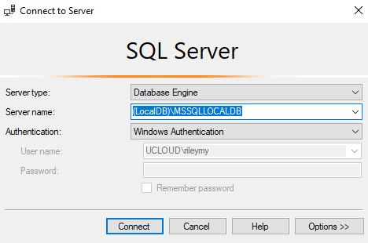
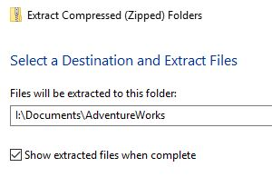
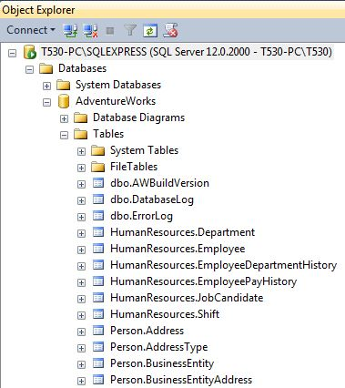

MRRisley:=("Setting up T-SQL")
Note: This guide is adapted from Itzik Ben-Gan's T-SQL Fundamentals, 3rd edition.

Back to SQL Home
Note: You always have to follow these steps every time you log in to a UC PC, whether physical or virtual. (You don't have to re-download AdventureWorks, however, if saved to your I:/ drive.)
Setting up T-SQL
Open SQL Server Management Studio (SSMS) through UC computer.
Connect to LocalDB
- After starting SSMS, ensure Server type is set to "Database Engine."
- Type (LocalDB)\MSSQLLOCALDB in the Server name field.
- Windows Authentication should be set as default and your user name / password should be grayed out. No change is necessary.

Download AdventureWorks 2014 to your Personal Drive
This is a sample database provided by MS.
- On UC computer, follow link here.
- Under "To install AdventureWorks", click the link under number (2), "download AdventureWorks-oltp-install-script.zip".
- Move or extract all files from Downloads folder to I:/Documents/AdventureWorks/ . You'll have to create the AdventureWorks folder.
- Open the file instawdb.sql. Make sure you connect to SQL Server prior to opening.
- Click the Query menu at top and select SQLCMD mode. This is the command mode for SQL.
- Navigate to the first line that is not colored green in the script. The code should read:
- Run the query by pressing F5 or pressing the Execute button.
- The code will execute with errors. This is because we do not have full-text search enabled.
- Ensure that you can see an AdventureWorks database and tables, shown below.

:setvar SqlSamplesSourceDataPath "C:\Samples\AdventureWorks\"
Change it to:
:setvar SqlSamplesSourceDataPath "I:\Documents\AdventureWorks\"

Download Accompanying Files for Ben-Gan
These are files to accompany T-SQL Fundamentals., 3rd ed. by Itzik Ben-Gan
- Follow link here.
- The zip file is a collection of scripts for each chapter. If running these scripts are required, the steps will be reviewed together with the concepts.